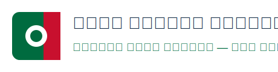

🧠 اختبار: كيف ينمو عقلي — الصَّفُّ الثَّالِثُ
مادّة الهُوِيَّةِ وَالمُواطَنَةِ — قناة الهوية والمواطنة
تشغيل الموسيقى
إيقاف الموسيقى
وضع ملء الشاشة
⟵ انقر لتفعيل الصوت في المتصفح
مَا الَّذِي يُسَاعِدُ عَلَى نُمُوِّ العَقْلِ؟
اللَّعِبُ مَعَ الأَصْدِقَاءِ
القِرَاءَةُ وَالتَّعَلُّمُ
مَا الَّذِي يُحَافِظُ عَلَى نَشَاطِ العَقْلِ؟
التَّغْذِيَةُ الصِّحِّيَّةُ
السَّهَرُ الطَّوِيلُ
كَيْفَ نَهْتَمُّ بِعُقُولِنَا أَكْثَرَ؟
شُرْبُ المَاءِ بِانْتِظَامٍ
الإِفْرَاطُ فِي المَشْرُوبَاتِ الغَازِيَّةِ
مَا الَّذِي يَنْفَعُ عُقُولَنَا؟
ممارسة التمارين والتنفس الصحيح
الجُلُوسُ الطَّوِيلُ بِلا حَرَكَةٍ
مَا الَّذِي يُحَافِظُ عَلَى صِحَّةِ العُقُولِ وَالقُلُوبِ؟
الحِفَاظُ عَلَى صِحَّةِ الجِسْمِ وَالرِّيَاضَةُ
الإِكْثَارُ مِنَ الأَطْعِمَةِ الضَّارَّةِ
إظهار النتيجة